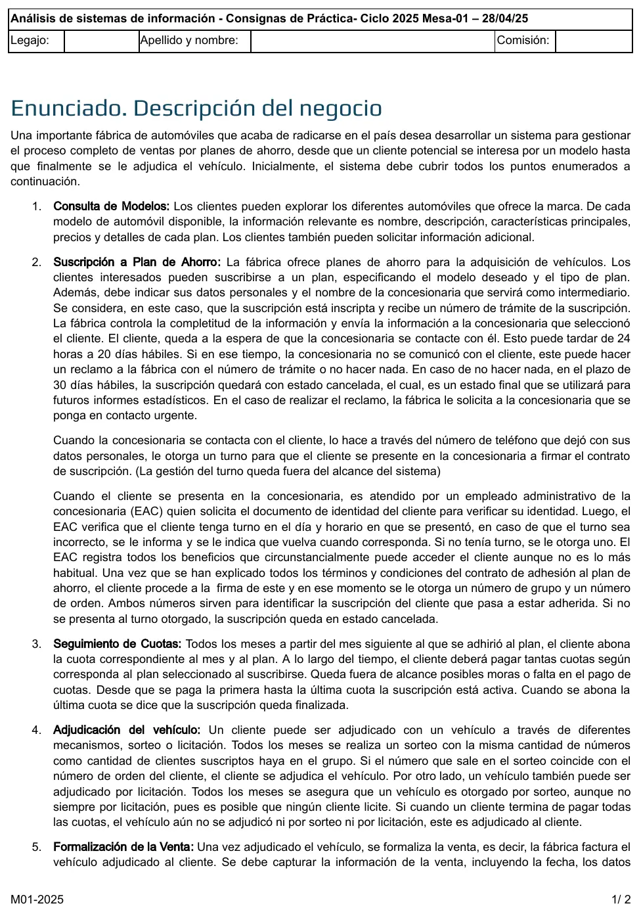
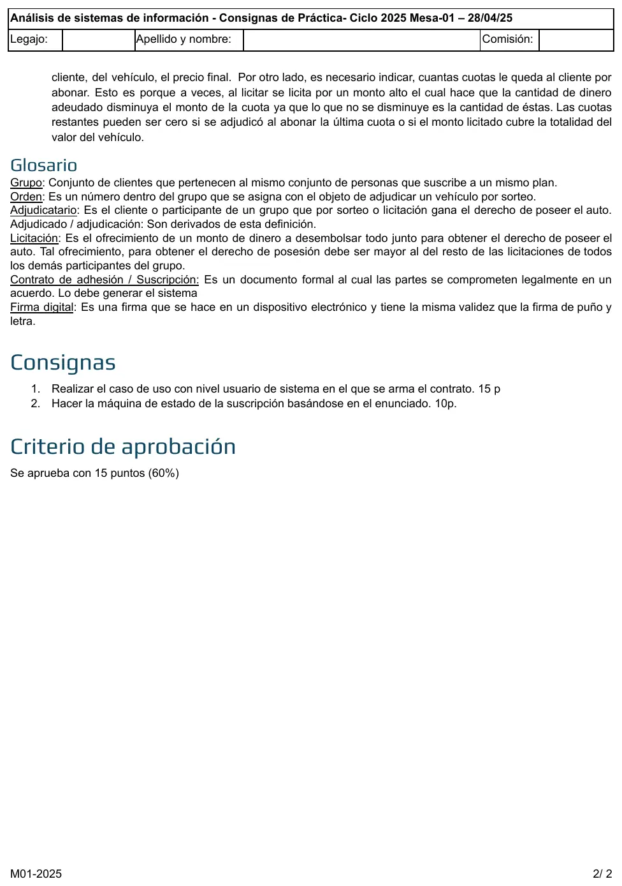

Final, 28/04/2025. Planes de ahorro
Final, 28/04/2025
Enunciado




Propuesta de respuesta
Respuesta no verificada. La propuso Luta Studios con inteligencia artificial y ningún docente la revisó. Puede tener errores.
1. Caso de uso de usuario en el que se arma el contrato
El turno se gestiona fuera del sistema, así que tenerlo para ese día y horario va como precondición de negocio.
CUU01 Registrar adhesión a plan de ahorro
| Campo | Contenido |
|---|---|
| Dimensiones | Usuario, Sin estructurar, Sistema, Negra, Real, Semántica |
| Meta | Adherir cliente a plan de ahorro |
| Actor primario | Empleado administrativo de la concesionaria (EAC) |
| Otros | Cliente |
| Precondiciones de negocio | El cliente tiene turno para el día y horario en que se presentó. |
| Precondiciones de sistema | Existen Suscripciones inscriptas. Existen Planes y Modelos. |
| Disparador | El cliente se presenta en la concesionaria a firmar el contrato de suscripción. |
Camino básico
- EAC solicita al Sistema registrar una adhesión e ingresa el tipo y número de documento del cliente. Sistema busca la suscripción inscripta del cliente e informa sus datos personales, el número de trámite, el modelo y el plan.
- EAC ingresa los beneficios a los que accede el cliente. Sistema registra los beneficios, arma el contrato de adhesión con los términos y condiciones del plan y lo informa.
- EAC explica al cliente los términos y condiciones del contrato. Cliente firma el contrato con firma digital. Sistema registra la firma, asigna el número de grupo y el número de orden, registra la suscripción como adherida e informa el número de grupo y el de orden.
Caminos alternativos
1.a <reemplaza>El cliente no tiene una suscripción inscripta:1.a.1Sistema informa la situación. Fin CU.
2.a <reemplaza>El cliente no accede a ningún beneficio:2.a.1EAC indica que no hay beneficios. Sistema arma el contrato de adhesión sin beneficios y lo informa. Continúa en paso 3.
3.a <reemplaza>El cliente no firma el contrato:3.a.1EAC informa que el cliente no firmó. Sistema informa que la adhesión no se registró. Fin CU.
*.aEAC cancela el registro. Fin CU.
Postcondiciones de sistema
- Éxito: La Suscripción quedó adherida, con su contrato firmado, sus beneficios, su número de grupo y su número de orden.
- Fracaso:
<vacío> - Éxito alternativo: La Suscripción quedó adherida sin beneficios (2.a).
Postcondiciones de negocio
- Éxito: El cliente está adherido al plan de ahorro.
- Fracaso: El cliente no tiene suscripción inscripta (1.a). El cliente no firmó el contrato (3.a).
- Éxito alternativo:
<vacío>
Reglas de negocio relacionadas con el caso de uso, con el paso y el tipo
1El documento de identidad identifica al cliente (hecho)2El EAC registra todos los beneficios a los que puede acceder el cliente, aunque no sea lo habitual (hecho)3La firma digital tiene la misma validez que la firma de puño y letra (hecho)3El grupo reúne a los clientes que suscriben un mismo plan (hecho)3El número de orden es único dentro del grupo (restricción)3El número de grupo y el número de orden identifican la suscripción (restricción)3Al firmar el contrato, la suscripción pasa a adherida (acción disparadora)
Diccionario de datos
Paso E/S Flujo
1 E documentoCliente = tipoDocumento + nroDocumento
1 S suscripcion = nroTramite + apellido + nombre + telefono + nombreModelo + nombrePlan + cantidadCuotas + nombreConcesionaria
2 E beneficios = 1{descripcionBeneficio}n
2 S contrato = nroTramite + apellido + nombre + tipoDocumento + nroDocumento + nombreModelo + nombrePlan + cantidadCuotas + (1{descripcionBeneficio}n) + terminosYCondiciones
3 E firma = firmaDigital
3 S adhesion = nroGrupo + nroOrden
1.a.1 S sinSuscripcion = mensaje(d) mensaje(d) = "El cliente no tiene una suscripción inscripta"
3.a.1 S sinFirma = mensaje(d) mensaje(d) = "La adhesión no se registró"2. Máquina de estados de la Suscripción
Las transiciones llevan la forma actor o tiempo + verbo + objeto y la guarda entre corchetes. La adjudicación tiene una bifurcación, porque cuando la licitación cubre todo el valor del vehículo no quedan cuotas. Si el cliente abona la última cuota sin haber sido adjudicado, en ese momento se le adjudica el vehículo y la suscripción queda finalizada. Tocá el dibujo para verlo en pantalla completa.
Mientras está adjudicada, el cliente sigue abonando cuotas: la suscripción sigue activa en el sentido del relato hasta la última.
Respuesta no verificada. Puede tener errores.
Se armó con la página del 2° parcial (casos de uso, reglas de negocio, diccionario de datos y máquina de estados con guardas y bifurcación). La forma del caso de uso sigue el CUU01 de la resolución del 2° parcial del 01/11/25.
Quedó en duda: Si el turno queda fuera del sistema, el control de turno incorrecto o la falta de turno no entran en el caso de uso; si la cátedra lo espera adentro, van como caminos alternativos en el paso 1. No queda claro si al no firmar el contrato la suscripción queda cancelada o sigue inscripta. Adjudicada podría dibujarse como un estado dentro de Activa. La notación del diccionario sale de un resumen de alumno.
¿Cómo te fue?
Marcá cada tema del examen.
- Caso de uso de usuarioCasos de uso, en 2° parcial
- Máquina de estadosMáquina de estados, en 2° parcial